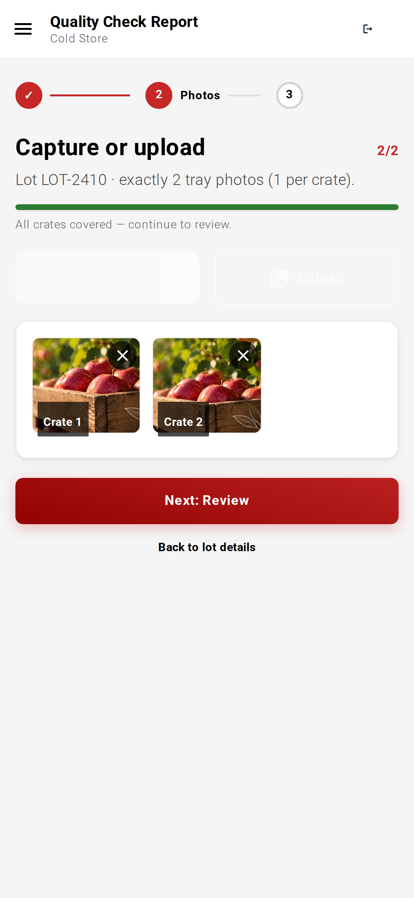

Malus Lens
The intake problem
01 — The scale
02 — The gate
03 — The guess
04 — The cost
05 — The fix
Jammu & Kashmir
20 lakh
tonnes of apples. Every year.
Nearly half the valleylives on them.
Every apple passesthrough one gate.
One decision
Good enoughto store?
That call restson a handful.
5of 150 crates
Hand-inspected per truckload
400 apples,checked by hand,
to judge thousands.
In the peak-season rush,
often, not even that.
2024 — 25 seasonRain shut the highway.
Fruit rushedinto storage.
The checkscouldn't catch it.
Months later,
shrivelled.scalded.
Estimated industry loss · 2024–25
₹0
crore.
lost.
Malus Lens
changes that.
Crate 01 · Intake gate
One photo per crate.
Apples detected
0
Grade A
0
Grade B
0
Every apple, detected.
Grade A. Grade B.
in seconds.

On the phone the storagealready owns.
99%
Object detection accuracy
95%
Grading accuracy
Field-tested on real intake batches
A clear number,at the gate,
before the doors close.
Malus Lens
Apple quality,assessed in seconds.
Book a demo →